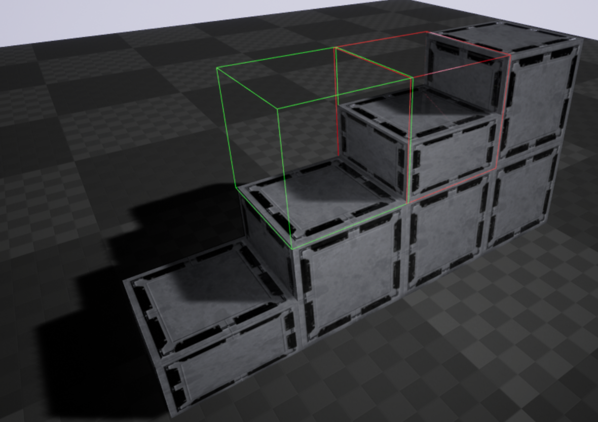
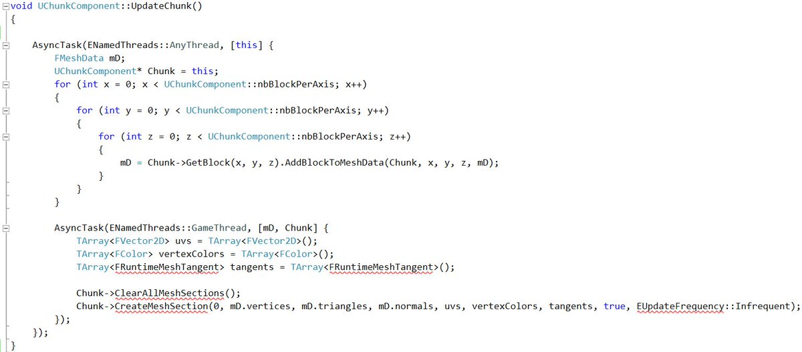

J'ai réalisé ce projet qui devait faire partie d'un jeu que je souhaitais concevoir.
Ce projet devait être capable de gérer la construction d'énormes vaisseaux à base de blocs. Ce vaisseau devait ensuite pouvoir se déplacer avec la physique (mais ici les constructions sont solides et statiques).
Ce projet devait être capable de gérer la construction d'énormes vaisseaux à base de blocs. Ce vaisseau devait ensuite pouvoir se déplacer avec la physique (mais ici les constructions sont solides et statiques).

On a une structure qui est composées de Chunks.
Les chunks contiennent des tableaux tridimensionnels de structures de blocks.
La structure block contient elle des variables d'un octet pour minimiser l'espace qu'ils prennent
ainsi que des fonctions qui vont appeler une fonction du même nom d'un objet stocké dans une liste qui représente le type de block qui est déterminé par l'un des octets.
On a donc une liste d'objet block qui contient une seul instance de chaque type de block.
ces objets ont des fonctions permetant la génération des différentes faces qui seront générées selon leurs obstructions.

On peut y voir ici un escalier fait de cubes et de demi-cubes utilisant le même matériaux.
Le tracé de cube vert indique l'endroit où le block sera posé et rouge celui qui sera retiré.
Ci-dessous une image d'une structure composer de 128*128*128 blocks, soit 2097152 blocks.

Générer par des boucles, la génération a pris 1 sec sur mon pc.

Utilisation de calcul bit à bit:
bit shifting pour savoir dans quel chunk un block se trouve.
int log = (int)FMath::Sqrt(UChunkComponent::nbBlockPerAxis); // 5 for 32*32*32 chunk
pos.X = x >> log;
pos.Y = y >> log;
pos.Z = z >> log;
ET bit à bit pour savoir quelle est la position d'un block par rapport à celle de son chunk.
x &= (UChunkComponent::nbBlockPerAxis - 1);
y &= (UChunkComponent::nbBlockPerAxis - 1);
z &= (UChunkComponent::nbBlockPerAxis - 1);
Les données géométriques se font remplir dans des boucles, mais pour chaque chunk dans un thread différent.(MultiThreading)
Générer par des boucles, la génération a pris 1 sec sur mon pc.
Utilisation de calcul bit à bit:
bit shifting pour savoir dans quel chunk un block se trouve.
int log = (int)FMath::Sqrt(UChunkComponent::nbBlockPerAxis); // 5 for 32*32*32 chunk
pos.X = x >> log;
pos.Y = y >> log;
pos.Z = z >> log;
ET bit à bit pour savoir quelle est la position d'un block par rapport à celle de son chunk.
x &= (UChunkComponent::nbBlockPerAxis - 1);
y &= (UChunkComponent::nbBlockPerAxis - 1);
z &= (UChunkComponent::nbBlockPerAxis - 1);
Les données géométriques se font remplir dans des boucles, mais pour chaque chunk dans un thread différent.(MultiThreading)
